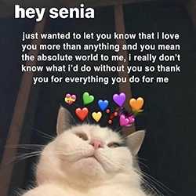

December 23rd 2020
On December 23rd, 2020, I received the most amazing blessing I could have ever asked for. I woke up to an interaction from @whats_a_juul on twitter. Little did I know that this interaction would change my life forever. From that day I felt an immediate connection to you. Everything about you blew me away. But before I even saw your face, I was already falling for you... your humour and energy made me smile at my phone like a little girl. then I saw you... and wow... you genuinely took my breath away. I was in a low point in my life... and you might not have even noticed that because you instantly made me happier. I was just looking for a sugar mama at first, but I found a forever person hahah.
I remember the first time we ever did a google meet, and I was so terrified because I thought you was going to not like me… but in fact it made us closer and since then we have been inseparable. Believe it or not, I still get excited, happy and anxious when I see you facetime call me, and I get even more happy every time I see your face, just like the first time we ever saw each other. You deserve the world and nothing less because you are genuinely the most beautiful, amazing, funny, and a fucking cool person I have ever had the pleasure of knowing. I hope we can stay this close forever because the thought of you not being in my life literally brings me to tears <3
I Love You.
Within the first couple days, my life revolved around you. texting you, getting to know everything about you, every little detail about you and I loved every second, minute and hour of it. I never thought we would end up so close, and it was literally the best thing that has happened to me in a long time. Every day we got closer and closer until you were my favourite person on this entire planet and 7 months later it hasn’t changed in the slightest. You're still my first thought in the morning and the last before I sleep. You are honestly the most amazing person I have ever met. You are gorgeous, the funniest girl I have ever met, and I can be myself around you which means more than you think to me. I wouldn’t change a single thing about you. Even the things you would call imperfections or flaws are so special to me and I love everything about you.
7 months ago, you changed my life forever. You have bought so much happiness to my life, and you have made me a better person. I cannot thank you enough for sticking around even though I know I can be a pain in the ass sometimes! I'm looking forward to many more fun moments for us to share and I cannot wait to come and see you. You mean the absolute world, moon and stars to me and you are so so so SO beautiful, inside and out. I love you so much and thank you for being such a huge part of my life. <3 <3 <3 <3 <3 <3 <3 <3 (a heart for every month)